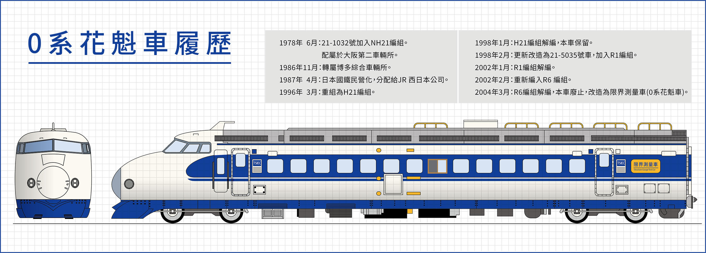
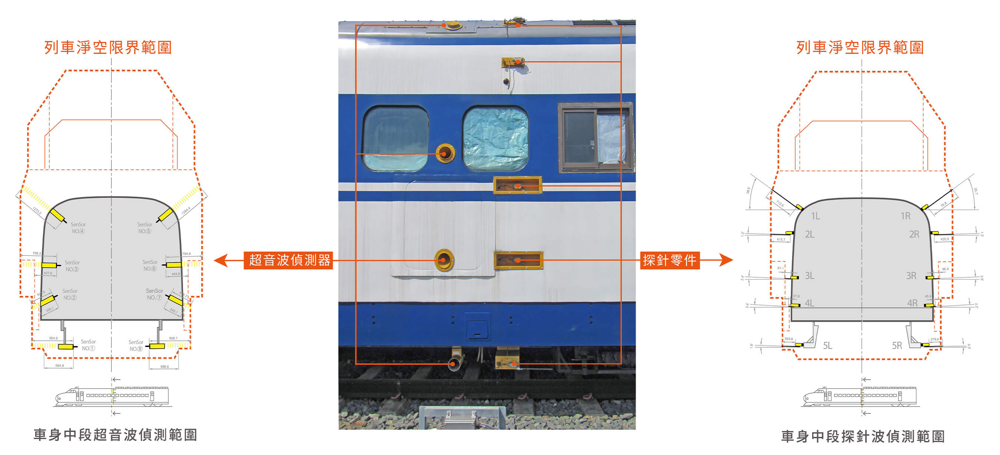

花魁車地景公園
一、0系花魁車經典再現
台灣高鐵在2003年高鐵興建期，即啟動高鐵重要歷史物件的徵集、研究與保存維護等專案工作，2017年在桃園高鐵運務中心正式成立台灣第一座高速鐵道博物館-「台灣高鐵探索館」，致力推展台灣高速鐵道科技與人文歷史教育。在正式典藏世界第一代高速鐵路列車「0系花魁車」後，台灣高鐵探索館更肩負世界鐵道文化遺產保存、維護與傳承的重要使命。
花魁車地景公園展區空間以0出發到無限大的發展元素闡述 0系車輛與台灣高鐵的故事，建築體以垂懸木梁三軸線交錯而成的輻射狀結構，藉此形塑鐵道「扇形車庫」的意象。花魁車地景公園也是台灣高鐵首次展示車輛文物的公共空間。
世界第一代高鐵-「0系」在台灣
「0系」是世界上第一款高速鐵路列車，也是日本新幹線列車的始祖，於2007年8月被列為日本機械遺產，闡揚其卓越機械的成就，帶給人類交通與生活革命性的巨變與貢獻。新幹線0系列車運轉44年後，於2008年正式在世界高速鐵路中退役。
這輛世界第一款高鐵「0系」 (編號21-5035／原編號：21-1032），源自台灣高鐵興建期間，由JR西日本贈予當時獲得高鐵核心機電系統建造合約的日本「台灣新幹線國際工程股份有限公司」（TSIEC)，並於2004年渡海來台，在高鐵興建的過程中擔任「限界測量車」任務，俗稱「花魁車」。功成身退後的0系花魁車，2012年由TSIEC承商贈予台灣高鐵公司，正式成為台灣高鐵重要典藏文物，也是世界唯二在日本海外的新幹線0系列車。
0系花魁車幾經調查研究與修復，最終坐落於高鐵台南站站前廣場，命名為「花魁車地景公園」，展現「0系」位於高速鐵路鰲頭的創新科技與成就，亦揭示「0系」在台灣「在地化」的再生面貌及衍生功能，不但在異國重生，也與台灣高鐵交融成為台灣高速鐵道文化歷史的一環。
二、台灣高鐵文化資產保存
「花魁」之名何來?
「花魁車」也是日本鐵道限界測量車的俗稱。基於測量路線界限和檢測軌道需求，必須自行在車體外部安裝許多宛如「髮簪」的測量儀器，執行任務時會延伸出車身，外觀宛如江戶時代的花魁會在髮型上插飾繁複髪簪，因此暱稱其為「花魁車」。
0系花魁車的DNA
0系花魁車原是在日本完成告別班次的「0系」(編號21-5035)車頭，為小窗1000番代車的一員，屬第 25批次新幹線車輛，由東急車輛製造廠於1978 年 6 月 19 日產製。根據車內銘板顯示這輛車係於1998年於JR西日本的博多綜合車輛所改裝成「限界測量車」，2004年7月16日抵台，負責協助台灣高鐵興建期間，檢查運轉行進範圍空間是否合格，以確保高鐵營運時的高速行駛安全。
修工程與紀實
「0系花魁車」在台以「限界測量車」退役後，便暫存於高鐵新竹六家基地，幾經簡易的修復，仍無法抵抗大自然的破壞，基於保存與傳承這輛深具世界鐵道科技劃時代意義的鐵道文化資產，2018 年經國立科學工藝博物館、鐵道專家與文保團隊的調查研究，以復原「0系花魁車」2004-2006年間服役時期的外觀與內裝為修復目標，並依循里加憲章(The Riga Charter) 精神，制訂「0系花魁車」的修復計畫，並於2019年啟動修復。
註1：里加憲章係為規範遺產鐵道可供後代所享有的有關決策，規範保護、修復、維護、修繕及運用那些具歷史性及營運中的鐵道設施之原則性條文，包含構成整體鐵道中任何部分的建築物或基礎設施。
0系花魁車的修復工程包含車輛內外，車體外觀修整、塗料復原、標誌復原、玻璃窗除垢拋光、車頭燈除垢拋光、下方踏板與排障器復原，鏽蝕部件逐一拆卸、去漆、除鏽等工序後，採取精密修補或新製鈑件銜接，以確保外觀平整。車體噴漆採用0系列車「青20號」及「奶油色10號」經典配色；車身上的數字及標記，均以原始字型及圖案噴漆或復刻。車內部分也精心整理，例如駕駛室控制面板重製、駕駛座椅整修等。
0系花魁車於2019年12月完成修復作業，總共歷時兩年，成為台灣高鐵典藏文物維護與保存的典範。
三、新幹線0系的誕生
世界高速鐵路先驅的傳奇-新幹線「0系」
「0系」是集日本鐵道技術之大成， 1964年10月1日東京奧運會舉辦前夕正式通車，將東京到大阪從過去的七小時，大幅縮短成為四小時，在營運第二年達到了令世人艷羨的210公里時速。
「0系」在日本鐵道上奔馳了44個年頭之久，未曾發生任何傷亡事故，於2008年功成身退，因其成功的鐵道科技，促使法國的TGV（1981年）和德國的ICE（1991年）相繼問世，以創新的科技，重新定義人類的生活與產經模式。
新幹線「0系」之命名
新幹線（新幹線／しんかんせん／Shinkansen）採用標準軌（1,435mm）之軌距，之所以稱做「新幹線」，是因為它是全新的幹線，與既有的「在來線」不相同。「0系」初期只被稱為「新幹線電車」，而官方內部名稱是「000系」，一直到東北、上越新幹線的200系投入服務後，才開始被稱為「0系」。
新幹線「0系」設計
1950年代末期，日本經濟逐漸復甦，對城際高速交通的需求大增，其中以東京都區部和大阪市最為迫切高速交通，東海道新幹線建設之初的日本國鐵總裁十河信二任命日本國鐵總工程師島秀雄擔任列車的設計總指揮。
創新的分散動力與交流電模式科技
在鐵路發展的初期，慣以機車牽引客車的「動力集中模式」，但島秀雄革命性思維，認為如將動力模組分散在每一輛客車上，能平均分配各車輛對路基的壓力，不但適合日本脆弱的地質，更能節省建築成本和路線維護開支。
於是在十河信二與島秀雄的領導下，日本國鐵開始自行研發「動力分散模式」的新型電氣列車，賦予新幹線成為快又有力的電力車。除此之外，日本國鐵還率先研發出高鐵上使用的交流電供電模式，相較於當時國際電力車常用的直流電模式，交流電更加高效。
子彈列車流線型設計
0系車頭長25公尺，寬約3.4公尺，車廂地板離地1.3公尺，車體以碳鋼製造，因此單節車輛平均重量達64噸。「0系」最令人稱道的是它類似飛機駕駛艙的列車駕駛室以及像子彈型般的車頭，這些創意概念主要來自設計師三木忠直以過去設計飛機的經驗與原理，挑戰當時鐵道界普遍認為列車時速不可能超過160公里的保守觀念，設計出新型且具有車身輕量化與高速化的列車，而子彈頭般流線型的造型，不但具有前衛美感，更有助於減少空氣阻力，達到210公里的時速，幾乎可與當時的飛機相匹敵。
象徵時代流行文化的車體塗裝
「0系」列車的原色塗裝是參考當時航空業巨擘-泛美航空(註2.)航機的塗裝和hi-lite牌香菸的包裝紙設計而成，車體主色為乳白色，車窗附近則塗上日後新幹線專用的「新幹線藍」色，兩種顏色分別代表白雲和藍天，由此可知「0系」車體色彩設計靈感，主要凸顯60年代的科技與流行文化象徵。
註2.泛美世界航空（Pan American World Airways,Pan Am）自1930年代至1991年倒閉前，曾為全球航空業的翹楚指標，包括率先大量使用噴射客機與巨無霸客機，以及開啟電腦化訂位系統，使其成為20世紀的交通文化象徵。
四、透視花魁車
0系花魁車剖析及限界測量工作
台灣高鐵興建階段中，路線上各橫斷面，尤其月台、隧道、橋涵等處所保留的淨空範圍，均須符合建築界限規範。完工後亦須以各種測量手段來確認，這時就需要「限界測量車」登場了。
0系花魁車主要是擔任限界測量任務，負責高鐵興建期間檢視車站結構、月台設施、橋梁隧道等結構是否超出建築界限，而侵入鐵道路線淨空範圍內，方能確保高鐵未來行駛安全。
為了測試沿線的淨空是否合格，在日本九州博多總合車輛所改裝這輛0系，除了拆除客室內部分座椅，加裝測量儀器，還在車頂改裝了觀測小窗，供工程人員探頭監視之用。而在車外，則有探針及超音波探測器，環繞車身兩側，能在前進時偵測車身與建築之距離，以及是否會碰觸到任何障礙物。由於這輛0系花魁車來台後已無動力，不能自力行駛，必須由同樣來自日本的DD14型柴液機車推進，方能執行任務。
五、台灣高鐵軌道路床形式
台灣高鐵軌道路床形式
台灣高鐵為了因應沿線地質條件以及提供最安全與最高品質的乘坐感受，在軌道路床的設計概念分為日本版式軌道(J-SLAB) 、德國式軌道版(Rheda) 、低振動軌道(LVT)、道碴軌道(Ballast Track)以及只出現在台北站的嵌入式軌道 (Embedded Rail System)。
日本版式軌道(J-SLAB)
在橋梁段，選擇同受地震所苦的「日本版式軌道」(J-SLAB)。日本版式軌道以混凝土預鑄製作，再搬運到橋梁上鋪設，並以CA砂漿固定，能夠兼顧軌道品質與施工速率，因此採用日本版式軌道，約占台灣高鐵軌道全線80.9%。(展區即使用此形式軌道)
德國軌道版(Rheda 2000)
靠近車站與車站內的版式軌道，選用「德國式軌道版」(Rheda軌道),能夠非常精準地將軌道定位，搭配轉換軌道的系統(轉轍器)提供最安全的措施，約占台灣高鐵軌道全線14%。
低振動軌道(LVT)
在台北地下段(自板橋到南港)，700T列車會行經台北都會區，為避免附近居民受到振動與噪音影響，選擇「低振動軌道」(Low Vibration Trackform,LVT)以混凝土塊下的雙層彈性橡膠墊板吸收列車行駛的壓力，減低振動與噪音，約占台灣高鐵軌道全線3.6%。
道碴軌道(BallastTrack)
道碴的用途是減少列車對軌道與地面的壓力，也增加排水性。台灣高鐵只在少部分平面地段使用，如左營車站與維修基地，避免平面上列車行駛噪音影響到居民的生活品質。
台灣鐵道科技演進史
超過百年歷史的台灣鐵道
台灣曾經有過形形色色的火車款式。從早年的飽和式蒸汽機車，進步到更具動能的過熱式蒸汽機車，接著由動力分散式的柴油客車登場，再發展到柴電機車與電力機車。
台灣的鐵道動力技術，由蒸汽轉換為柴油引擎，最終進入電氣化，安靜又快速的電聯車終於登場，後續加入傾斜式電聯車的服務，而高鐵700T型列車時速更達到300公里，創造了台灣西部「一日生活圈」。從時速30公里進步到300公里，效能與服務不斷提昇，鐵道技術史的演進過程是台灣歷史的一部分，也是台灣人生活的記憶。
台灣鐵道第一輛蒸汽機車：騰雲號（時速35）
營運:1888
由日本自行研發、設計、量產，與同時期的800型並稱為「大正雙雄」，為日本鐵道「國產化」成功的代表作。在1920年代起擔任西部幹線特快車，戰後改為CT150型，一直使用至鐵路電氣化為止。
日製機關車黎明期的嘗試：18號型（時速35）
營運:1901
日本鐵道「國產化」最初期的作品，以英國A4型機關車為參考並予以仿製，因而由英日兩國多加廠商製造，為1900～1920年代，台灣鐵道的主力蒸汽機關車之一。日本時代編為18號型，戰後台鐵改為BK10型。
大正年間的新銳代表作：500型（時速75）
營運:1919
由日本自行研發、設計、量產，與同時期的800型並稱為「大正雙雄」，為日本鐵道「國產化」成功的代表作。在1920年代起擔任西部幹線特快車，戰後改為CT150型，一直使用至鐵路電氣化為止。
流線型時代的再次提速：C55型（時速85）
營運:1935
蒸汽機車技術成熟時期的作品，車身結構已經大量採用焊接，且鍋爐上方的汽包與砂箱合而為一，相較於以往的車輛，較具流線與現代感，不過動輪仍然採用早期的輻輳式。戰後改編為CT250型。
一日往返北高成為可能：DR2500型（時速105）
營運:1955
台鐵於二戰後將原有汽油客車，陸續換裝柴油引擎，發現成效良好；加上美援後路線及號誌大幅改善，因此於1955年新購柴油客車編組，創下台北高雄間5小時30分的新紀錄，「柴油飛快車」在當時聲名遠播。
西部幹線的第一款柴油機車：R20型（時速100）
營運:1960
台鐵在1950年代末期，展開動力柴油化，美國製的R20型柴電機車是最早啟用的車輛。柴電機車是以柴油引擎發電，再帶動牽引馬達，在能源效率和空氣污染上都比蒸汽機車有大幅改善。
電氣化前的最高速列車：DR2700型（時速110）
營運:1966
柴油飛快車(DR2500、DR2600)的後續車種，雖為日本製造，但採用美國Budd公司柴油客車概念，車身以不鏽鋼打造，車頂配置大型散熱器。1966年登場時，定名為「光華號」，台北到高雄4小時45分，為當時陸上最快交通工具。
台灣第一款電聯車：EMU100型（時速120）
營運:1978
西部鐵路電氣化時，引進多款電力車輛，其中EMU100型為台灣首見的電聯車組，也是首次將運轉時速提升到120公里。除了速度快，車內也配備冷氣與高級裝潢，開創台鐵服務提升的里程碑。
台灣第一款傾斜式列車：TEMU1000型（時速140）
營運:2007
台鐵東部幹線彎道多，造成行車上的限制，因此在2006年引進「傾斜式電聯車」TEMU1000型，定名為「太魯閣號」，列車於過彎前主動將車身傾斜，增加高速過彎的舒適度。
展區
展區
展區
展區
公開的密室 ─ 高鐵文史庫房

台灣高鐵文史庫房，典藏高鐵歷史標的物萬餘件，奠定了台灣高速鐵道文化資產的基石，也開啟台灣鐵道文化資產保存的新策略，更為高鐵企業文化刻劃出深厚的人文精神。庫藏的物件從未正式對外公開展示，僅有少量物件進行借展交流或展出，高鐵文史庫房儼然成為「收藏的密室」。
但因現有實體展示空間有限，台灣高鐵為打破台灣博物館界刻板冰冷的庫房設計風格，將高鐵文史庫房以「公開的密室」的方式展出，除兼具典藏與展示的雙向功能外，更可以彌足觀眾對博物館庫房的好奇心，並可有效應用典藏庫空間，使其不再是與世隔絕的密室。

實際操作說明
「公開的密室」是透過高科技的光電玻璃，可以點選每一片玻璃右上方的「透明展示」按鈕，讓原本不透明的液晶玻璃，馬上成為透明的狀態，讓大家探索高鐵文史庫房內的樣子。由於文史庫房設有嚴格的溫度、濕度，與相關的環境控制進行典藏，所以藉由光電玻璃的呈現方式，邀請大家到現場一窺文物保存與運作的內容。


台灣高鐵文史庫房的創生與遷移
草創期 / 2003年
2003年10月16日奉殷琪董事長指示，台灣高鐵公司針對沿線各標段有關鐵道歷史標的物進行研究及調查彙整工作，並強調「人」與「物」的資料蒐集。
大園時期 / 2004年 — 2007年
2006年，大量興建文物已蒐集至租用之大園文史庫房存放，當時面對即將來臨的營運期可能產生的文物。2006年8月，委託國立科學工藝博物館進行高鐵文物典藏政策、分類及作業辦法之研擬。
大園文史庫房時期，台灣高鐵歷史標的物，僅處於臨時性的登錄與存放，但礙於物件的數量累增與其典藏價值不明，急需各類專家的支援，協助高鐵建立完善的蒐藏方針與管理政策；台灣高鐵公司遂委聘開物國團隊，率先導入國外先進文物整飭技術，正式奠定高鐵歷史標的物保存維護的重要基石。


燕巢時期 / 2007年 — 2016年
台灣高鐵大園文史庫房因硬體設備條件不足，基於文物整飭與典藏環境條件所需，台灣高鐵公司重新規劃設置高鐵文史庫房於高雄燕巢總機廠，促使其更具典藏使用條件與規模。
2007年12月10日，高鐵文史庫房自桃園大園遷移至高雄燕巢總機廠，簡稱台灣高鐵燕巢文史庫房。搬遷工程浩大，當時4,000餘件的高鐵歷史標的物，費時四次搬遷，動員眾多人力與20餘輛各載重15噸之搬運車。
「高鐵文史庫房」回歸母親的懷抱，在燕巢總機廠找到一個安定的家。在此時期開始進行高鐵文物典藏政策修訂與文物整飭工程，為高鐵文物注入符合文物保存科學的能量，並規劃建置文物典藏管理系統，為每一件文物打造符合博物館典藏維護的溫床，奠定高鐵文物保存永續發展之基礎。


台灣高鐵探索館時期 / 2016至今
歷經13年來的文物徵集，高鐵文史庫房自2017年再度從燕巢總機廠遷移至位於桃園的台灣高鐵探索館，高鐵文物已穿越十餘年的時空，歷經歲月的洗鍊，正式站在台灣高速鐵道科技的展示舞台。